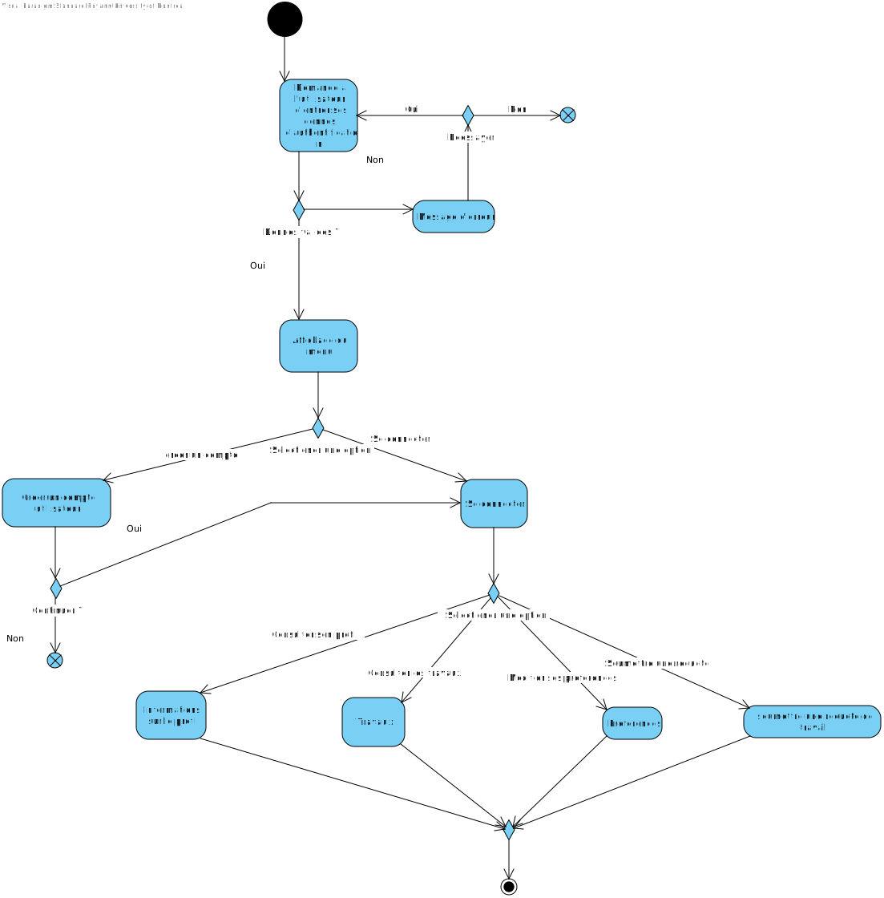
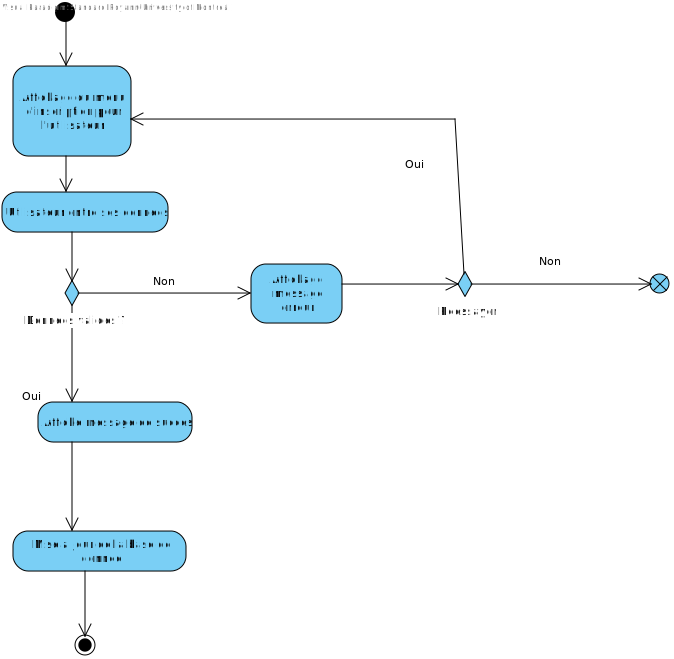
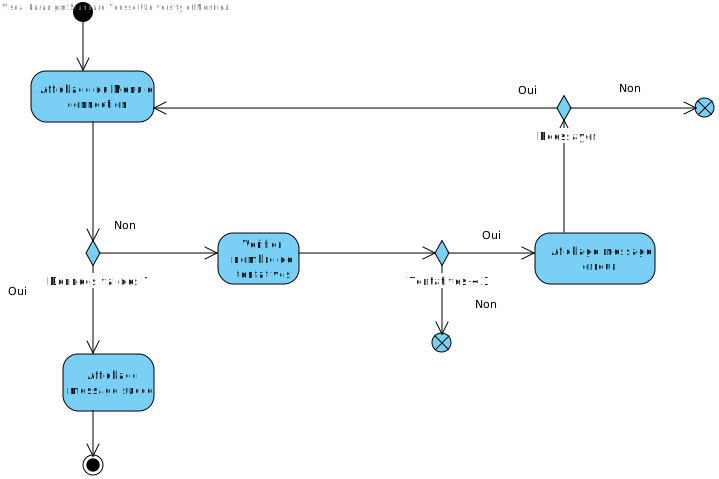
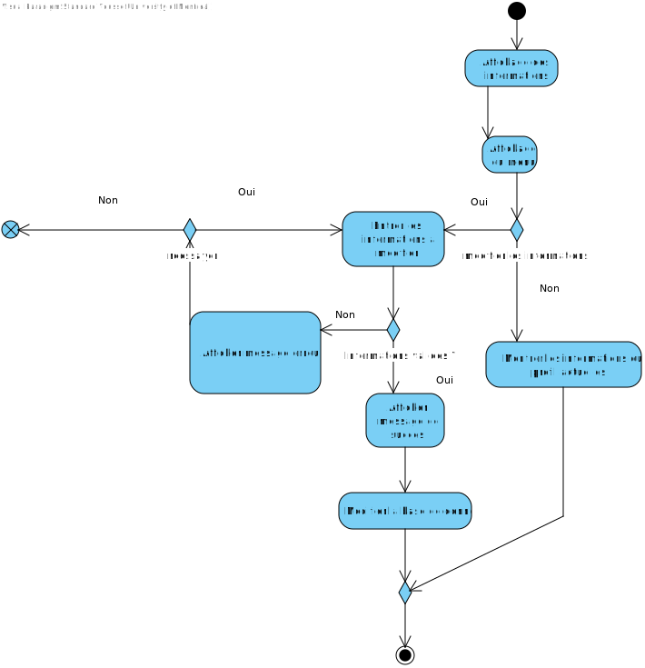
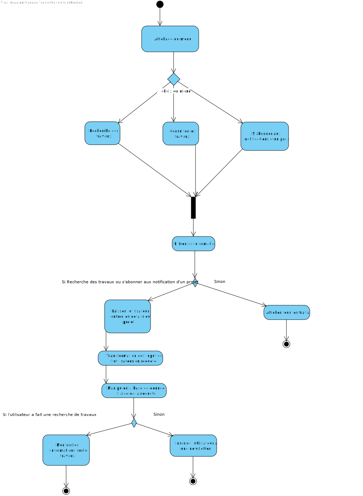
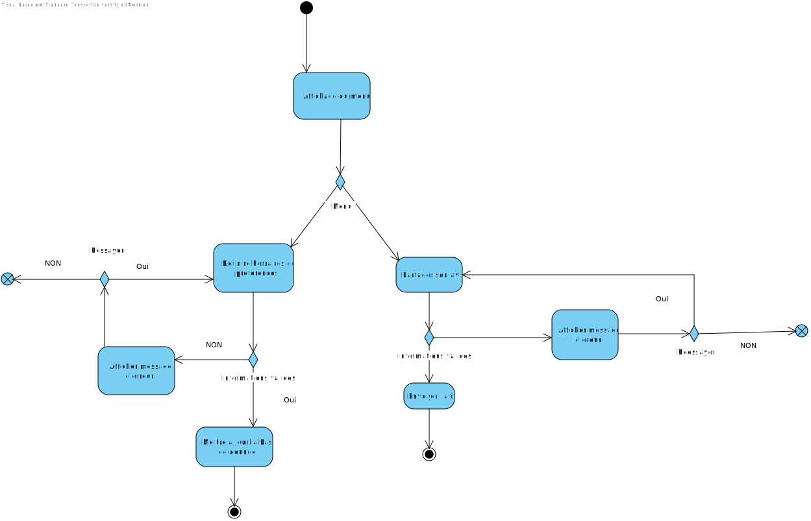
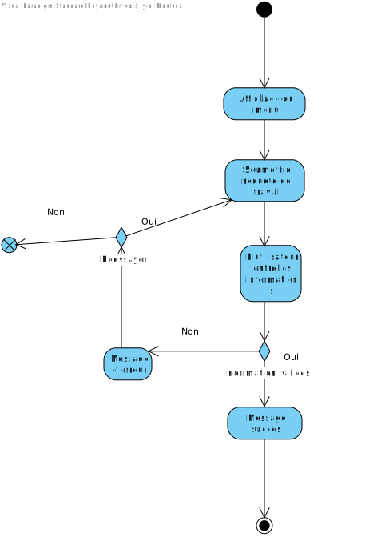
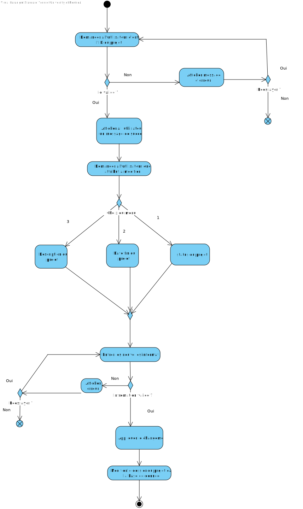
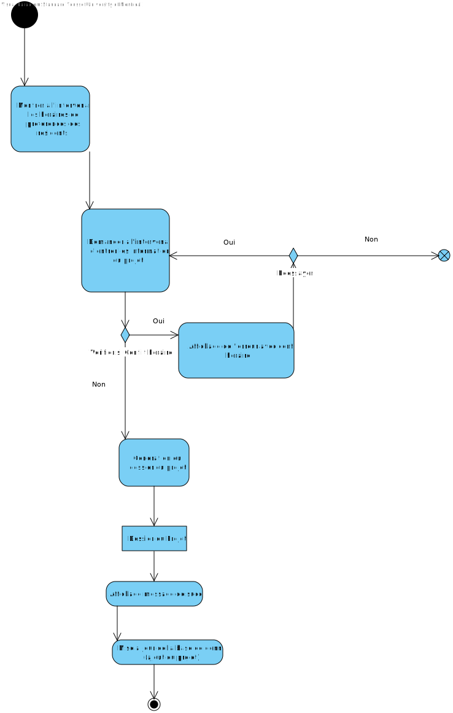

Cadre du projet
Introduction
L'application Maville est conçue pour faciliter la mise en relation directe entre les habitants et les intervenants de la ville de Montréal concernant les projets de construction. L'objectif de l'application est de simplifier les démarches et améliorer la vie quotidienne des citoyens.
Échéancier
Présentation de l'échéancier et la distribution des taches (au moins pour le devoir 1)
Exigences
Après de nombreuses rencontres avec le client et une familiarisation avec les activités de recyclage et compostage, nous avons préparé un glossaire rassemblant les termes et expressions clés caractérisant l'environnement.
Glossaire
- Résidents
- Un utilisateur de l'application qui souhaite recevoir des informations sur les travaux affectant son quartier ou soumettre des requêtes de travaux.
- Intervenant
- Toute personne ou entité (entreprise publique, entrepreneur privé, particulier) réalisant des travaux.
- Travaux publics et privés
- Interventions réalisées par la ville ou ses partenaires ou des entreprises et particuliers. Ces travaux peuvent inclure la construction, la réparation, l'entretien des routes, des trottoirs, des réseaux souterrains, des réseaux de transport, ou d'autres infrastructures urbaines.
- Service Info entraves et travaux
- Service actuel qui permet de s'informer sur les entraves causées par les travaux réalisés par la Ville, ses partenaires, les promoteurs immobiliers, les entrepreneurs privés et les particuliers.
- Planification participative
- Processus dans lequel les résidents peuvent indiquer leurs préférences concernant les horaires des travaux dans leur quartier.
- Requête de travail
- Demande soumise par un résident pour réaliser des travaux dans un secteur ou sur une rue. Cette requête est visible par les intervenants qui peuvent y répondre.
- Projet de travaux
- Proposition de travaux soumise par un intervenant, incluant les détails (type, lieu, date de début/fin, ...).
- Type de travaux
- Catégorie de travaux comme les travaux routiers, les travaux souterrains, ou l'entretien des réseaux de télécommunication.
- Notifications personnalisées
- Fonctionnalité permettant à un résident de recevoir des alertes sur certains types de travaux affectant son quartier, selon ses préférences.
- Statut d'un projet
- Indication concernant l’évolution d’un projet de travail. Il peut être : "Prévu", "En cours", "Suspendu" ou "Terminé".
- Candidature
- Proposition faite par un intervenant pour réaliser un travail demandé par un résident. Le résident a la possibilité d'accepter ou de refuser cette candidature.
Cas d'utilisation
Notes à propos du diagramme
- Résident (Principal) : Le résident peut consulter les travaux en cours, soumettre des requêtes de travaux, définir ses préférences de notifications et d'horaires, ainsi que signaler des problèmes.
- Intervenant (Principal) : L'intervenant soumet des projets, modifie les informations de ceux-ci, et peut proposer des candidatures pour les requêtes de travaux.
- Administrateur (Secondaire) : L'administrateur vérifie la légitimité des intervenants et traite les problèmes signalés par les résidents.
Scénarios
Scénario principal
- Le résident ouvre l'application et sélectionne l'option "S'inscrire".
- Le résident remplit les champs d'inscription (nom, date de naissance, adresse courriel,...).
- Le système vérifie la validité des informations.
- Le système enregistre le résident et confirme l'inscription.
Scénarios alternatifs
Scénario principal
- L’utilisateur ouvre l’application.
- L’utilisateur entre ses identifiants.
- Le système vérifie la validité des informations.
Scénarios alternatifs
Scénario principal
- Le résident ouvre l'application.
- Le résident sélectionne l'option "Consulter les travaux en cours ou à venir".
- Le système affiche la liste des travaux en cours.
- Le résident applique des filtres (par type de travaux).
- Le système met à jour la liste selon les filtres appliqués.
- Le résident sélectionne un projet pour voir plus de détails.
- Le système affiche les détails du projet (description, date de début/fin, statut, impact sur la circulation).
Scénarios alternatifs
Scénario principal
- Le résident ouvre l'application.
- Le résident sélectionne l'option "Soumettre une requête de travail" depuis le menu principal.
- Le résident renseigne les détails de la requête (titre, description, type de travaux, date de début souhaitée).
- Le résident soumet la requête.
- Le système vérifie que tous les champs d’information sont complétés.
- Le système enregistre la requête et envoie une notification aux intervenants.
- Le résident reçoit une confirmation que la requête a été soumise.
Scénarios alternatifs
Scénario principal
- Le résident ouvre l’application.
- Le résident consulte la liste des requêtes de travail qu’il a soumises.
- Un intervenant a soumis sa candidature.
- Le résident refuse la candidature.
Scénarios alternatifs
Scénario principal
- Le résident ouvre l’application.
- Le résident consulte la liste des requêtes de travail qu’il a soumises.
- Un intervenant a soumis sa candidature.
- Le résident accepte la candidature.
Scénarios alternatifs
Scénario principal
- Le résident ouvre l’application.
- Le résident remplit les champs demandés (nom, adresse, type de problème, description,...).
- Le résident soumet le signalement.
- L'administrateur reçoit le signalement.
Scénarios alternatifs
Scénario principal
- Le résident ouvre l’application.
- Le résident sélectionne l'option "rechercher des travaux".
- Le résident applique des filtres (par type de travaux, rue ou quartier).
- Le système met à jour la liste selon les filtres appliqués.
- Le résident sélectionne un projet pour voir plus de détails.
- Le système affiche les détails du projet (description, date de début/fin, statut, impact sur la circulation).
Scénarios alternatifs
Scénario principal
- Le résident ouvre l’application.
- Le résident sélectionne l'option "définir ses préférences de notifications".
- Le résident choisit ses préférences (quartier, rue, projet spécifique, …).
Scénarios alternatifs
Scénario principal
- Le résident ouvre l’application.
- Le résident sélectionne l'option "Définir ses préférences d’horaire".
- Le résident indique ses plages horaires préférées pour les travaux dans son quartier.
- Le résident définit ses préférences.
Scénarios alternatifs
Scénario principal
- L’utilisateur ouvre l’application.
- L’utilisateur sélectionne l’option “Consulter les préférences des résidents”.
- L’utilisateur consulte les préférences.
Scénario principal
- Le résident ouvre l’application.
- Le résident consulte la liste des projets de travaux terminés dans son quartier.
- Le résident sélectionne un projet terminé sur lequel il souhaite donner son avis.
- Le système affiche un formulaire de partage d'avis.
- Le résident rédige son avis sur le projet.
- Le résident soumet son avis.
Scénarios alternatifs
Scénario principal
- L’intervenant ouvre l'application et sélectionne l'option "S'inscrire comme intervenant".
- L’intervenant remplit les champs d'inscription (nom, type d’intervenant, adresse courriel, identifiant de la ville).
- L’administrateur vérifie la validité des informations.
- L’administrateur enregistre l’intervenant et confirme l'inscription.
Scénarios alternatifs
Scénario principal
- L’intervenant ouvre l’application.
- L’intervenant sélectionne l’option "Consulter les requêtes de travaux".
- L’intervenant applique des filtres (par type de travaux, rue ou quartier,...).
- L’intervenant sélectionne une requête pour obtenir plus de détails.
- Le système affiche les détails de la requête (nom, adresse, type de problème, description,...).
Scénarios alternatifs
Scénario principal
- L’intervenant ouvre l’application.
- L’intervenant consulte la liste des requêtes de travaux.
- L’intervenant sélectionne une requête de travaux qu'il souhaite réaliser.
- L’intervenant clique sur l’option "Soumettre une candidature".
Scénarios alternatifs
Scénario principal
- L'intervenant ouvre l’application.
- L’intervenant sélectionne l’option "Soumettre un nouveau projet de travail".
- L’intervenant rentre les informations sur le projet (titre, type, description,...).
- L’intervenant soumet le projet.
Scénarios alternatifs
Scénario principal
- L’intervenant ouvre l’application.
- L’intervenant consulte la liste des projets qu’il a soumis.
- L’intervenant sélectionne un projet.
- L’intervenant modifie les informations.
Scénarios alternatifs
Scénario principal
- L’utilisateur ouvre l’application.
- L’utilisateur sélectionne l’option “Modifier ses informations personnelles”.
- L’utilisateur change les informations qu’il souhaite.
- L’utilisateur confirme les changements.
Scénarios alternatifs
Diagramme d'activités pour residents
Menu, pour residents
Ici, nous n'incluons pas les fonctionnalités qui concernent les intervenants, même s'ils doivent passer par le même menu.
S'incrire, resident
Se connecter, resident
Obtenir informations, resident
Travaux, resident
Preferences des resident
soumettre requete, resident
Diagramme d'activités pour quleques fonctionnalites pour intervenants
Mise a jour du chantier
Soumettre projet intervent
Analyse
Risques
-
Problème non signalé ou en retard
Justification: Si une notification d’un problème n’est pas envoyée, l’objectif de l’application n’est pas rempli.
Solution: Il faut que les intervenants, comme les entreprises pour les travaux ou la STM pour les transports, utilisent l’application pour une communication efficace des travaux et des retards. -
Panne
Justification: Si l’application est en panne, aucune notification ne sera envoyée et les intervenants ne pourront pas communiquer sur les problèmes.
Solution: Toutes les applications peuvent être sujettes à des pannes. En cas de panne, il faudrait pouvoir avertir les résidents et les rediriger vers, par exemple, un site externe à l’application pour lister les travaux en cours ou vers les réseaux sociaux/site de la STM pour savoir s’il y a des retards. -
Faible utilisation des résidents et intervenants
Justification: Si le taux d’utilisation de l’application est faible des deux côtés, cela va réduire la communication et donc réduire l'efficacité de l’application.
Solution: Bien communiquer sur la sortie de l’application et faciliter l’inscription pour être attractif. -
Nombre trop élevé de notifications
Justification: Lorsqu'il y a trop de notifications, il peut être difficile de tout lire et de comprendre où sont les travaux. Cela peut aussi être dérangeant et pourrait mener à une désinstallation de l’application.
Solution: Faire des messages courts et clairs. Il faut aussi bien pouvoir détailler pour un résident quel type de travaux recevoir en notification, par exemple pouvoir séparer les notifications selon les moyens de transport (bus/métro ou voiture). -
Sécurité
Justification: Les utilisateurs entrent une partie de leurs données personnelles, il est donc nécessaire que les comptes soient sécurisés.
Solution: Avoir des normes de sécurité strictes.
Besoins non-fonctionnels
-
Disponible sur tout type d’appareils (iOS, Android,...)
Justification: Pour avoir le plus d’utilisateurs possible, l’application doit être disponible sur le plus de systèmes d’exploitation possible. -
Fiabilité
Justification: L’application doit être disponible 99.9% du temps pour être le plus efficace possible. -
Sécurité des données personnelles
Justification: Les informations partagées par les résidents et les intervenants doivent être protégées. -
Facilité d’utilisation
Justification: L’application doit être utilisable par tous, y compris les personnes ayant un handicap ou celles peu habituées aux nouvelles technologies. -
Performance
Justification: L’application peut être utilisée par un grand nombre de personnes, donc malgré cela, elle doit rester performante. -
Mémoire
Justification: L’application ne doit pas prendre trop d’espace pour être utilisée par le plus grand nombre de personnes.
Besoins matériels
Ordinateur ou serveur pour héberger l'application.
Connexion stable pour que l'application puisse être accessible en tout temps par les résidents et les intervenants sans perturbation.
Espace de stockage suffisant pour stocker les données des utilisateurs et des projets de travaux. Le stockage peut être ajusté en fonction du volume de données (via un système évolutif comme le cloud).
Smartphones pour les utilisateurs de l'application.
Solution de stockage
Une base de données relationnelle SQL peut être utilisée pour enregistrer les informations importantes (inscriptions des utilisateurs, détails des projets de travaux, ...) afin d'organiser les données de manière efficace et rapide.
Une base de données NoSQL peut être utilisée pour gérer des données non structurées, telles que les préférences de notifications.
Les bases de données doivent être facilement évolutives pour gérer un nombre croissant de données et d'utilisateurs au fur et à mesure de la croissance de l'application.
Il est important d'automatiser les sauvegardes des données, par exemple, une fois par jour, pour éviter toute perte de données.
Solution d'intégration
Pour intégrer l’application au service Info Entraves et Travaux de la ville, l'utilisation d'une API permettrait à Maville de récupérer en temps réel les données sur les travaux planifiés et en cours. Cela faciliterait l'affichage d'informations précises et l'envoi de notifications aux résidents concernant les projets affectant leur quartier.
Prototype
Pour exécuter le prototype, vous devez l'avoir préalablement cloné localement sur votre machine.
Si ce n'est pas le cas, vous pouvez cloner le dépôt GitHub en utilisant l'une des deux commandes suivantes :
git clone https://github.com/youssefbriki1/ift2255-devoir1-groupe2.git
ou
git clone git@github.com:youssefbriki1/ift2255-devoir1-groupe2.git
Ensuite, naviguez jusqu'au répertoire où le code est stocké :
cd prototypes
Pour exécuter le projet, utilisez la commande suivante :
java -jar main.jar